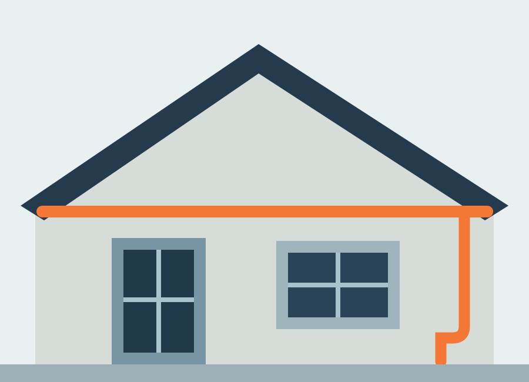

Roof Inspection
Discuss visible wear, suspected leaks, storm concerns or a general roof condition assessment.
ROOFING · REPAIRS · GUTTER CARE
Practical roofing and gutter care, from inspections and maintenance to repairs that help keep your property protected.
✓ Clear advice. Thoughtful work. Every property and repair is assessed on its own needs.
A MORE CONSIDERED APPROACH
Roof and gutter issues can be difficult to assess from the ground. We make it easier to explain your concern, arrange an appropriate assessment, and understand the next steps.
This is a customizable starter website. Replace the sample business profile, service list, imagery and claims with verified information before publishing.
See how it works →ROOFING SERVICES
Choose a service to start an enquiry. Final scope depends on inspection, roof type, access and site conditions.
Discuss visible wear, suspected leaks, storm concerns or a general roof condition assessment.
Share details about damp patches, water ingress or damaged roof areas for assessment.
Enquiries for slipped or broken tiles, flashing concerns and localized roof defects.
Plan maintenance based on roof type, property condition and seasonal needs.
Ask about inspection or repair options for a flat roof. Availability must be confirmed.
Describe damage after severe weather and ask about a safe assessment.
GUTTER & DRAINAGE CARE
Blocked or damaged gutters can contribute to overflow and damp. Ask about clearing, downpipes, repairs or replacement options.

● PREVENTIVE PROPERTY CARESERVICE OPTIONS
Pricing depends on access, height, condition, materials and work required. No fixed price is implied here.
Discuss blocked gutters, downpipes and access requirements.
Quote after detailsScope and access dependentExplain the issue and arrange an assessment if available.
Inspection enquiryVisit and scope to be confirmedAsk about a planned visit to review roof and gutter concerns.
Custom quotationBased on property requirementsPROJECT GALLERY
These are illustrative images. Replace with genuine project photographs before presenting them as completed company work.
HOW IT WORKS
Every job is different. This simple process gathers the details needed to respond.
Tell us your contact details and the service you need.
Share the location and visible issue without putting yourself at risk.
Discuss access and inspection options with the team.
Confirm scope, price and schedule before work begins.
ABOUT ROOFLINE
Roofline Roofing & Gutter Care is a sample business identity. Add your real company history, team details, service capabilities and verified credentials here.
Only publish licences, insurance details, certifications or safety claims when you can substantiate them.
Talk to the team →Assess the situation, explain options and agree on scope before work starts.
CUSTOMER FEEDBACK
Add genuine, permission-approved reviews here. No fabricated testimonials are displayed in this template.
COMMON QUESTIONS
Confirm details with the business before publishing.
Still have a question? →It depends on nearby trees, roof layout, weather and debris. Ask for a schedule suited to your property.
Send an enquiry describing the issue. Inspection availability and a safe assessment method will be confirmed by the team.
Availability depends on the company's actual capabilities and the roof type. Confirm before booking.
Share the service and property location. Any site visit, quotation method and fees should be confirmed directly.
Service areas are configurable. Contact the business to confirm whether your property is covered.
These are enquiry categories only. Confirm service availability before relying on a response.
Urgent call-outs are not guaranteed. Call to ask about availability and stay away from unsafe roof areas.
REQUEST A QUOTE
Share a few practical details. WhatsApp will open with an enquiry message ready for you to review and send.
This is not a confirmed inspection, quotation or repair booking. Availability must be confirmed by the business.
GET IN TOUCH
Replace these sample details with verified contact information, hours and service areas.
WhatsApp the Team ↗Add a verified business address or correct map embed.